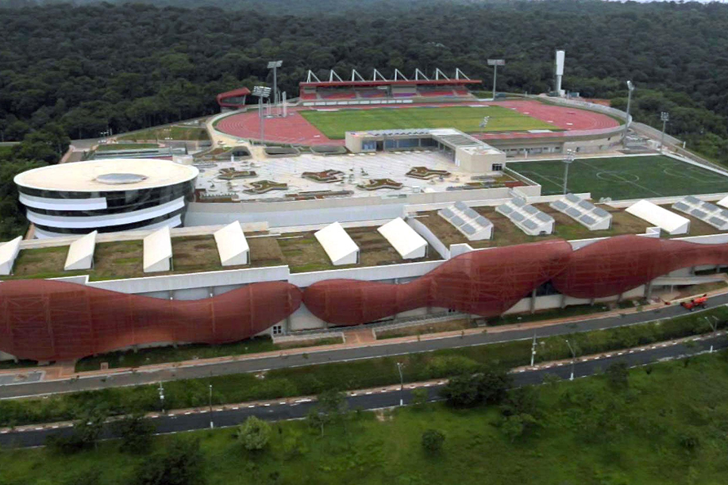
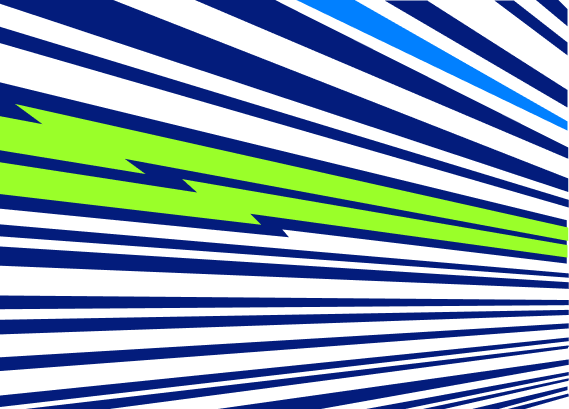
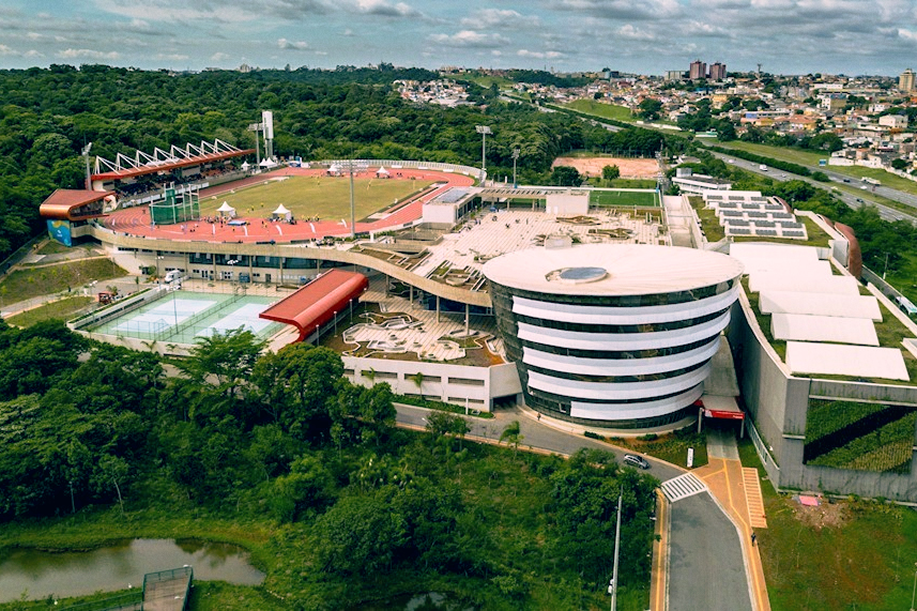

Centro de Treinamento
Paralímpico Brasileiro
Apresentação
O Centro de Treinamento Paralímpico Brasileiro (CTPB) está localizado no bairro do Jabaquara, na zona sul da cidade de São Paulo, próximo à Rodovia dos Imigrantes e ao Parque Estadual Fontes do Ipiranga. É administrado pelo Comitê Paralímpico Brasileiro e é considerado o principal centro de excelência do esporte paralímpico da América Latina e um dos mais modernos do mundo.
O espaço foi criado para atender atletas desde a iniciação esportiva até o alto rendimento, servindo também como local de competições, intercâmbios internacionais, pesquisas e formação de profissionais do esporte.

Dados Gerais
| Informação | Dados |
|---|---|
| Inauguração | 23 de maio de 2016 |
| Localização | Rodovia dos Imigrantes, km 11,5 Vila Guarani – São Paulo/SP CEP 04329-000 Telefone: (11) 4710-4000 |
| Administração | Comitê Paralímpico Brasileiro (CPB) |
| Área construída | 95 mil m² |
| Área total do complexo | Cerca de 130 mil a 140 mil m² |
| Capacidade de hospedagem | Aproximadamente 300 leitos |
| Finalidade | Treinamento, competições, pesquisa e formação esportiva |
| Referência mundial | Um dos maiores centros paralímpicos do mundo |

Como Surgiu o Centro?
A construção do Centro de Treinamento Paralímpico Brasileiro foi oficializada em janeiro de 2013, dentro do Plano Brasil Medalhas, um programa federal de incentivo ao esporte de alto rendimento.
A proximidade dos Jogos Paralímpicos do Rio de Janeiro, realizados em 2016, impulsionou a criação do complexo, considerado o principal legado físico deixado pelo evento para o esporte paralímpico nacional. Após cerca de dois anos e meio de obras, o centro foi inaugurado em maio de 2016.
Estrutura Do Complexo
O complexo engloba 95 mil metros quadrados e possui infraestrutura para 20 modalidades paralímpicas. Ele opera com alojamentos, centro de medicina e laboratórios esportivos, o que tem sido decisivo para a evolução contínua de novos talentos.
O CTPB reúne instalações esportivas indoor (cobertas) e outdoor (ao ar livre), além de estruturas de apoio aos atletas:
